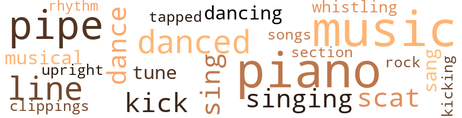
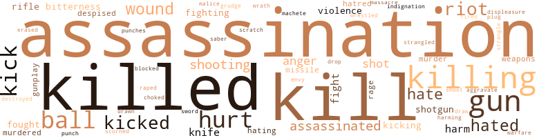

50 music-related terms matched in this text.
Most frequent terms in this topic: piano (8); music (8); pipe (5); danced (3); line (3)

clipping.n.01
Definition: an excerpt cut from a newspaper or magazine
| word |
sentence |
| clippings |
He 'd shown me local newspaper clippings of the funerals . |
dance.n.01
Definition: an artistic form of nonverbal communication
| word |
sentence |
| dance |
I ran up a bill each year that made Ma Bell dance in the streets . |
dance.v.03
Definition: skip, leap, or move up and down or sideways
| word |
sentence |
| danced |
He danced off sideways , like an old-time vaudevillian leaving the stage while still doing a hokey routine . |
| dance |
" Tucker John , I 'd like to stay and dance on somebody 's halls , really I would . |
| dancing |
I leaned in the doorway of the grand ballroom , watching the ape stop dancing to scratch its crotch . |
| danced |
Ahead of me , heat waves danced on the highway , shimmering on both sides of the yellow dividing line . |
| danced |
The second the words left my mouth , I knew that this thought had also danced across Trotman 's mind . |
kick.v.04
Definition: kick a leg up
| word |
sentence |
| kick |
Trotman on his knees at night , head bowed , thick hands folded , praying to God to please send him a dog to kick . |
| kick |
I turned from the door in time to see Tucker John kick Yellow T-shirt in the balls , dropping the Cuban to his knees . |
| kicking |
They would n't he kicking us in the leg if I could n't hurt them . |
music.n.01
Definition: an artistic form of auditory communication incorporating instrumental or vocal tones in a structured and continuous manner
| word |
sentence |
| music |
I 'd got the third word when Lamont had reached out for the car radio 's dial with a hand the size of a suitcase and learned the hard way that you do n't get soul music in Indiana . |
| music |
After a quick scratch , the ape continued tap-dancing to the piano player 's gentle music . |
| music |
" You mean the music ? " asked Walter Fragan . |
| music |
If that 's music , I 'm a wombat . " |
| music |
Still in Florida , according to the area code given me by my secretary , Fragan was trying to speak above Latin barroom music noisy enough to make your ears bleed and stun high-flying birds . |
| music |
Behind Fragan , the I.atin music was faint but still unkind to the ears . |
| music |
Just country music on the radio . |
| music |
Great music to indulge in unnatural sex practices by . |
musical.n.01
Definition: a play or film whose action and dialogue is interspersed with singing and dancing
| word |
sentence |
| musical |
Green stalks of some kind - small ones , medium-sized ones , big ones - all in long , even rows like something out of a Rodgers and Hammerstein musical . |
piano.n.01
Definition: a keyboard instrument that is played by depressing keys that cause hammers to strike tuned strings and produce sounds
| word |
sentence |
| piano |
He seemed calm , sitting on the piano bench as though it were a park bench and he had nothing better to do than pass the time with a stranger . |
| piano |
I remembered a piano back in a Winslow suburb and I 'd followed my ears . |
| piano |
Walter Fragan sighed , uncrossing his legs and leaning back against the piano . |
| piano |
Cars exploding in parking lots ; guys chasing me through cornfields ; Walter Fragan playing the piano and sneering ; handsome Gaylord Ran Harley handing me a folded newspaper , then turning around and walking away ; Delia Sisson sitting across from me and telling me she was going to die soon . |
| piano |
Good Impressionist prints , copies of French classical furniture , a piano . |
| piano |
Looking around , I saw a brown and yellow couch near a grand piano . |
| piano |
I walked over to the couch , noticing Bach piano scores propped up on the piano . |
| piano |
I walked over to the couch , noticing Bach piano scores propped up on the piano . |
pipe.n.04
Definition: a tubular wind instrument
| word |
sentence |
| pipe |
I was an iron pipe for McClan to beat on T.M. DeBlase with . |
| pipe |
Fragan 's voice was like a lead pipe against the temple . |
| pipe |
Ruben Weiner , tall , sixty , white hair , pipe smoking , with had teeth and an ulcer , let his eyes go from me to Jack and hack again . |
| pipe |
Ruben Weiner tapped his pipe against an ashtray , keeping his eyes down . |
| pipe |
Ruben Weiner aimed his pipe stem at me . |
rhythm.n.04
Definition: the arrangement of spoken words alternating stressed and unstressed elements
| word |
sentence |
| rhythm |
My rhythm was bad . |
rock_'n'_roll.n.01
Definition: a genre of popular music originating in the 1950s; a blend of black rhythm-and-blues with white country-and-western
| word |
sentence |
| rock |
With enough security on hand to fight a war or handle a rock concert . |
scat.n.01
Definition: singing jazz; the singer substitutes nonsense syllables for the words of the song and tries to sound like a musical instrument
| word |
sentence |
| scat |
His big hand came from beneath the scat with a brown manila envelope . |
| scat |
My fingers ached , and sitting in the front scat of Harriet Good 's car had made my drawers creep up again . |
section.n.01
Definition: a self-contained part of a larger composition (written or musical)
| word |
sentence |
| section |
Since the town is seventy-six percent black , an all-black section 's not that hard to find . |
sing.v.02
Definition: produce tones with the voice
| word |
sentence |
| sing |
Do birdies sing in the morning ? |
| sang |
On the car radio , a woman sang about a cheating man who was fooling around wilh her sister , her cousin Mac , and her grandmother . |
| Sing |
Sing me a lullabye , maybe . |
singing.n.01
Definition: the act of singing vocal music
| word |
sentence |
| singing |
I fingered the car radio until my wrist ached , but all I came up with was men and women singing in nasal voices about having a last cup of coffee in a lonely diner . |
| singing |
We could have been in a Berlin tavern singing beer songs . |
song.n.01
Definition: a short musical composition with words
| word |
sentence |
| songs |
We could have been in a Berlin tavern singing beer songs . |
tapdance.v.01
Definition: dance and make rhythmic clicking sounds by means of metal plates nailed to the sole of the dance shoes
| word |
sentence |
| Tapped |
Tapped out . |
tune.n.01
Definition: a succession of notes forming a distinctive sequence
| word |
sentence |
| tune |
Jugglers , children 's acts , singers that ca n't carry a tune in a bucket , piano players that play in the cracks . |
| line |
I 'd stepped across a line , into a territory where men play worldwide games that end with somebody getting killed . |
| line |
Loni would n't want to destroy the designer 's line . |
| line |
Harley 's voice was sharp , a commander keeping the troops in line . |
upright.n.02
Definition: a piano with a vertical sounding board
| word |
sentence |
| upright |
Delia Sisson sat upright in an easy chair , the way they teach you at Southern charm schools . |
whistle.v.01
Definition: make whistling sounds
| word |
sentence |
| whistling |
He squeezed past me and walked away whistling . |
402 violence-related terms matched in this text.
Most frequent terms in this topic: assassination (48); killed (43); kill (42); killing (30); gun (19)

abrasion.n.01
Definition: an abraded area where the skin is torn or worn off
| word |
sentence |
| scratch |
After a quick scratch , the ape continued tap-dancing to the piano player 's gentle music . |
anger.n.01
Definition: a strong emotion; a feeling that is oriented toward some real or supposed grievance
| word |
sentence |
| anger |
My heart jumped and I had more than a little anger in my voice . |
| anger |
Irritation was edging over into anger , reasonable enough when somebody pulls you from sleep and just breathes into the phone . |
| anger |
It was good to hear her voice , anger and all . |
| Anger |
Anger was never subtle with him . |
| anger |
Jack Sommers slapped the table in anger , both hands palms down and making a lot of noise . |
assassinate.v.01
Definition: murder; especially of socially prominent persons
| word |
sentence |
| assassinated |
Your handsome , young , somewhat impetuous President Havilland was assassinated over ten years ago , twenty-four hours before he was to be inaugurated . |
| assassinated |
If the leader of Russia or Communist China were to be assassinated and advance knowledge was made available to your countrymen , how many of them would warn the intended target ? |
| Assassinated |
Assassinated ten years ago in New Orleans he day before he was to be sworn in as President of the United States . |
| assassinated |
President-elect Victor Evan Havilland had been assassinated by a lone rifleman . |
| assassinated |
" When we got word that Havilland had been assassinated in New Orleans , DeBlase and a few of the people around him drank a toast to celebrate . |
| assassinated |
All just about the time Victor Evan Havilland was assassinated . " |
character_assassination.n.01
Definition: an attack intended to ruin someone's reputation
| word |
sentence |
| Assassination |
The purpose of these trips was to meet the Cuban premier and together plot the Assassination of your President Victor Evan Havilland . |
| assassination |
" Let me get this straight : You knew about the assassination ? |
| assassination |
There were rumors about an assassination conspiracy and these rumors were still around . |
| assassination |
You 're telling me that DeBlase planned the Havilland assassination ten years ago ? |
| assassination |
The Victor Havilland assassination . |
| assassination |
" Fragan , let 's say that what you just told me about the Havilland assassination is true . |
| assassination |
Are you telling me that merely because you 've been unable to uncover any assassination conspiracy that none exists ? " |
| assassination |
But I know the assassination of Havilland left a scar on this country that no so-called official investigation has so far erased . |
| assassination |
I know your Congress has investigated the assassination and I know a report has been issued saying one man , one bullet , and such nonsense . |
| assassination |
" Hey , look , Fragan , I 've read tons of stuff on the assassination and I know a lot of it 's bullshit . |
| assassination |
Be that as it may , such is the case with the assassination of President-elect Havilland . |
| assassination |
And that is why this particular assassination has remained a much-discussed mystery . |
| assassination |
" The Victor Havilland assassination . |
| assassination |
I want a closer look at the Victor Havilland assassination report , that shit that 's around Washington and not opened to slobs like me . |
| assassinations |
He 'd be one of you unless he decided that a senator okaying assassinations is one thing . |
| assassination |
Both of you have files and stuff on the assassination that you never made public . |
| assassination |
" These items " - she tapped my list with a pink-tipped nail - " were turned over to the Archives after the assassination . |
| assassination |
Disappeared right after the assassination committee completed its report . " |
| assassination |
Did you know that something like eighty people involved with that assassination have been killed ? " |
| assassination |
But the most interesting fact of all was that in twenty volumes of the commission 's assassination report , based on testimony and interviews with twenty thousand witnesses , none of the information that I was taking down had ever appeared . |
| assassination |
It seems that the commission , which did not have its own investigators , relied entirely on an investigation of the assassination by the CIA and the FBI . |
| assassination |
And there was always the assassination investigation itself . |
| assassination |
Got picked the same day for the assassination committee . |
| assassination |
He did n't want his name on no Havilland assassination report . |
| assassination |
We turned in a piece of shit called an assassination report ; we all signed it and threw it at the American people . " |
| assassination |
" Senator , is there anything you can tell me about the CIA and FBI reports on the assassination ? " |
| assassination |
The unanimous Havilland assassination report was as genuine as the tooth fairy . |
| assassination |
Anyhow , Warden Uttman and my husband were in touch from almost the day my husband got put on that assassination committee . |
| assassination |
The last time they were taken out was the day before the assassination . |
| assassination |
Mr. Harker , Riley was meeting Warden Uttman for more information on the assassination . |
| assassination |
It belonged to a Cuban who had tried to get money from Riley for giving him information on the assassination . |
| assassination |
It seems that while out of jail , supposedly in a hospital toiling for the cause of science , these three men I mentioned to you were doing more than honing their tactics for assassination . |
| assassination |
The assassination report wanted one man , one bullet . |
| assassination |
I 'm sure you know the CIA and the FBI both have their own assassination reports , both unreleased . " |
| assassination |
All within a week after Victor Havilland 's assassination . " |
| assassination |
Even political assassination costs money , Mr. Harker . |
| assassination |
My friend says he can tell you something about the mechanics of the assassination . |
| assassination |
Jesus , this assassination thing was getting bigger and bigger . |
| assassination |
Trotman had just told me he could n't get his hands on the unreleased CIA report on the Victor Evan Havilland assassination . |
| assassination |
He still could n't bring himself to talk about his beloved CIA and the Havilland assassination in the same breath . |
| assassination |
The Havilland assassination had taken place in New Orleans . |
| assassination |
No wonder the CIA and FBI were hot to keep Perry Joseph 's employment record out of the final assassination report . |
| assassination |
If I got good information from Fragan and Miranda , if I got a copy of the unreleased assassination report from Trotman or somebody else , then I did n't need to know what was going on in Vegas . |
| assassination |
I opened my mouth , but I was n't going to mention the secret CIA assassination report . |
| assassination |
One of those papers had to be the secret Havilland assassination report . |
| assassination |
Which meant he had the secret assassination file on Havilland . |
| assassination |
That 's how long the truth about Victor Evan Havilland 's assassination had been a big fat secret . |
| assassination |
The stuff I was showing him was my notes , and a copy of my unfinished rough on the assassination . |
| assassination |
And that secret CIA report on the assassination . |
| assassination |
The CIA report on Victor Evan Havilland 's assassination . |
| assassinations |
Victor Havilland had been one of several top-ranked politicians who had ordered CIA assassinations of foreign leaders . |
contemn.v.01
Definition: look down on with disdain
| word |
sentence |
| despised |
The man despised Havilland , if I remember correctly . " |
| despised |
Riley hated hunting , despised it . |
| scorned |
He scorned confused . |
destroy.v.04
Definition: put (an animal) to death
| word |
sentence |
| destroyed |
I learned that a lot of records had conveniently been destroyed at Uttman 's prison during this particular riot . |
displeasure.n.01
Definition: the feeling of being displeased or annoyed or dissatisfied with someone or something
| word |
sentence |
| displeasure |
And their displeasure had been expressed in such ways as obscene phone calls , letters written in crayon , letters with shit smeared over them , dead snakes , live tarantulas , income-tax audits , death threats galore , and promises to beat the hell out of me as soon as possible . |
draw.v.23
Definition: pull (a person) apart with four horses tied to his extremities, so as to execute him
| word |
sentence |
| drawn |
She sat across from me on an easy chair , legs drawn up under her , dress pulled down modestly . |
| draw |
All of this , plus my flight number , had been what I counted on to draw somebody , anybody , out here in the desert . |
dropkick.v.01
Definition: make the point after a touchdown with a dropkick
| word |
sentence |
| drop-kick |
" The thought of that cornfield made me want to run across the room and drop-kick Lupus ' nuts into Kentucky . |
envy.n.01
Definition: a feeling of grudging admiration and desire to have something that is possessed by another
| word |
sentence |
| envy |
Mullen 's voice held hate and envy . |
erase.v.01
Definition: remove from memory or existence
| word |
sentence |
| erased |
But I know the assassination of Havilland left a scar on this country that no so-called official investigation has so far erased . |
exacerbate.v.02
Definition: exasperate or irritate
| word |
sentence |
| aggravate |
Do n't aggravate me , jungle bunny . |
fight.n.05
Definition: a boxing or wrestling match
| word |
sentence |
| fights |
The fights that went on , my Lord . |
fight.v.02
Definition: fight against or resist strongly
| word |
sentence |
| fight |
Why fight it , I thought . |
| fight |
With enough security on hand to fight a war or handle a rock concert . |
| fight |
He would fight Jesus if Jesus were in the wrong . " |
| fighting |
The man was seething and fighting hard to control himself . |
| fighting |
Like I said , fighting 's not my game . |
| fought |
Kalter fought to keep his voice low and ended up hissing like a snake . |
| fought |
I fought against my fear . |
| fought |
I fought it like hell , balling my fingers into fists . |
| fighting |
He was fighting to get his brain in gear . |
fury.n.01
Definition: a feeling of intense anger
| word |
sentence |
| rage |
His voice was high with rage . |
| rage |
' Going to be all the rage next year . |
gag.v.06
Definition: cause to retch or choke
| word |
sentence |
| choked |
Here lies Harker , choked to death by a sweaty , smelly Cuban with a forearm as hairy as King Kong 's . |
grudge.n.01
Definition: a resentment strong enough to justify retaliation
| word |
sentence |
| grudge |
Another man with a grudge against T.M . |
gun.n.01
Definition: a weapon that discharges a missile at high velocity (especially from a metal tube or barrel)
| word |
sentence |
| guns |
Fuckin ' people all got hair-trigger tempers and more guns than an armory . |
| guns |
I also wanted to know if T.M. DeBlase had encouraged the Company to meddle in foreign countries so he could make a profit on everything from helicopters to guns to tin mines . |
| gun |
I looked up and saw the biggest fucking gun I 'd ever seen in my life . |
| gun |
The gun was that Smith & Wesson .38 he carried , and from where I sat , it was twelve inches over my right temple , but pointed in the right direction - at those assholes who 'd red dogged me a few seconds ago . |
| gun |
Telling him this , I thought , would make us brothers under the gun . |
| gun |
I gave a small thought as to whether or not Estevez had a gun and decided , rather hoped , that he did n't . |
| guns |
Men with guns . |
| gun |
Estevez kept the gun aimed in my general direction , looking over his shoulder at me . |
| guns |
Armor , small arms , wheel guns . |
| guns |
In case the other two get cold feet or their guns do n't vork , or somethin' happens . |
| gun |
And a gun . |
| gun |
He dropped to one knee , left hand cupping his right fist , which held the gun in the steadiest grip this side of Kojak . |
| gun |
But the alternative was to let those homicidal farmers behind me get close enough to shove a gun up my nose . |
| guns |
Three with guns against one with a ballpoint pen . |
| guns |
With guns . |
| gun |
The gun was small , hidden under the folded newspaper given me by Harley . |
| gun |
Both newspaper and gun were now being held by someone other than me . |
| gun |
I 'd been given a quick look at the gun , just enough to let me know it was there . |
| gun |
That 's when Kalter had pulled a gun , covering it with my newspaper . |
| gun |
This little bastard was angry and psycho , a dangerous combination in a man holding a gun . |
| gun |
'Cause I got the gun . |
| gun |
Closer , closer , then he was on the coat , reaching out for it with the hand that held the gun , poking gently at the sleeves . |
| gun |
Shit , that turkey had a gun on me before you stepped in . |
| gun |
Witnesses will swear I was n't threatened , that nobody had a gun in my back . |
| gun |
They patted me down for a gun and found none . |
| guns |
Even without guns , they could have put out my lights . |
| gun |
If you did , you could n't describe him if somebody shoved a gun in your ear . |
| guns |
Furthermore , I do n't see where it says you got the right to wave guns around - " " Harker ? |
| guns |
Then ring-around-the-rosy out in a cornfield , and they had guns . |
| guns |
Fucking guns . |
gunfight.n.01
Definition: a fight involving shooting small arms with the intent to kill or frighten
| word |
sentence |
| gunplay |
His remark about Cubans and gunplay made me sit up straight and turn in my seat to face him . |
| gunplay |
His hot eyes said so and I thought of what Tucker John Delk had told me about Cuban gunplay In the Sunshine State . |
harm.v.01
Definition: cause or do harm to
| word |
sentence |
| harm |
" Trotman , would Gaylord Ran Harley kill a President who tried to harm his beloved CIA ? |
| harming |
His sense of restraint might change if he found me harming a close relative . |
hate.n.01
Definition: the emotion of intense dislike; a feeling of dislike so strong that it demands action
| word |
sentence |
| hatred |
Neither was I , but my not smiling had more to do with a strong sense of personal fear than a hatred of the press . |
| hatred |
" Mr. Harker , Victor Havilland represented the American people , and , like the American people , he had a blind hatred of the Cuban premier not always supported by facts . |
| hate |
Mullen 's voice held hate and envy . |
| hate |
But what he had done to Loni had brought out a lot of hate in me . |
| hate |
That hate could be put to good use . |
hate.v.01
Definition: dislike intensely; feel antipathy or aversion towards
| word |
sentence |
| hate |
I hate having drunks talk to me like that , hiding their nastiness behind booze as though it were n't their fault at all . |
| hated |
Jesus , I hated drunks . |
| hate |
" Did Havilland hate Benes that much ? " |
| hated |
First of all , lem me say that Riley Sisson hated huntin ' . " |
| hated |
The man hated huntin ' . |
| hated |
A man who did n't hunt and who hated flying . |
| hated |
Riley hated hunting , despised it . |
| hate |
But he did n't love me any more or hate me any less . |
| hating |
I looked around , hating the sound of the three men thrashing through the cornfield and getting closer . |
| hate |
I hate this kind of bullshit , sitting around here and talking about something before I 've finished it . " |
| hated |
I did n't tip the skinny bastard because I hated the shirt he was wearing . |
| hated |
I hated Harley for trying to kill her . |
| hated |
I hated Patrick Maxian for using her to get at me . |
| hating |
The man was good at hating . |
hurt.v.04
Definition: cause damage or affect negatively
| word |
sentence |
| hurt |
People have been hurt bad in this thing . " |
| hurt |
The Company would be hurt by a public airing of its inability to protect defectors . |
indignation.n.01
Definition: a feeling of righteous anger
| word |
sentence |
| indignation |
Oh , a couple of Congressmen took time out from their lecture tours to come back to Washington and pose for new photographs with copies of my story waving in righteous indignation above their heads . |
injury.n.01
Definition: any physical damage to the body caused by violence or accident or fracture etc.
| word |
sentence |
| hurt |
That hurt . |
| hurt |
My throat hurt like hell , and the room was turning red around me . |
| hurt |
I nodded , remembering that unforgettable hurt of over ten years ago . |
| hurt |
A precaution in case DeBlase gets hurt . |
| harm |
The man was big enough to do me incredible physical harm . |
| hurt |
That hurt . |
| harm |
Anyone looking closely would have thought I was about to do Trotman harm . |
| harm |
I could have done more harm to the sidewalk by biting it . |
| hurt |
But the Lamont who read Machiavelli , and who told stories about men who smiled just before putting the hurt on you , relaxed . |
| hurt |
My neck hurt like hell . |
| hurt |
Anybody gets in my way , gets hurt . |
kick.v.04
Definition: kick a leg up
| word |
sentence |
| kick |
Trotman on his knees at night , head bowed , thick hands folded , praying to God to please send him a dog to kick . |
| kick |
I turned from the door in time to see Tucker John kick Yellow T-shirt in the balls , dropping the Cuban to his knees . |
| kicking |
They would n't he kicking us in the leg if I could n't hurt them . |
kick_back.v.02
Definition: spring back, as from a forceful thrust
| word |
sentence |
| kick |
The June night was Washington summer weather at its worst : hot and humid , hard to breathe , and thick enough to kick a hole in . |
| kicked |
If I 'd been a five-pack-a-day man , I 'd have kicked the habit right then and there . |
| kicked |
When the new premier came in , he kicked ass right and left . |
| kick |
He could shake your hand and ask about the family or kick your ass and put you in traction . |
| kicked |
Once he 'd been within an hour and a half of being kicked off the force , framed , and sent to the slammer . |
| kicks |
His smile belonged on somebody who got kicks out of pulling the wings off butterflies . |
| kicked |
I 'd been kicked like a soccer ball . |
| kick |
But If I decide to kick his tiny ass , what are you going to do about that ? " |
| kick |
The man was so sure of himself that you wanted to kick him somewhere soft . |
| kick |
I read them looking for ideas , facts , anything to kick off a story . |
| kicked |
" Because , señor , the Mafia lost much money when Benes kicked them out of Cuba and closed down their casinos . |
| kicked |
We 've kicked it around , but what the hell , nothing 's come up to really knock it down . |
| kick |
Might as well kick it off with a clever line . |
| kicking |
My stomach started to act up again and I wondered if being an investigative reporter meant climbing into the lion 's cage and kicking it in the ass . |
| kicked |
The Perry Joseph we were all familiar with had been a twenty-eight-year-old misfit , kicked out of the Army and unable to hold a job anywhere . |
| kick |
I was ready to kick a hole in the telephone-booth wall . |
| kicked |
I was in Havana when Cannizzaro was kicked out . |
| kick |
Specially when he was gon na kick your ass . |
| kick |
Smile , then kick ass . |
| kicked |
My voice was high , like Mickey Mouse after being kicked in the balls . |
| kick |
" Kalter , if you do n't let go my elbow , I 'm going to kick your nuts all the way up to your nose . " |
| kick |
I wanted to kick his tiny ass in the worst way . |
| kicked |
I kicked him in the balls , sending him flying backward into a row of com , crashing into it and tearing some more of it loose . |
| kicking |
His little head tilted back on small shoulders and he stared at me as though I were kicking his mother in the head and he could n't wait to get at me . |
kill.v.10
Definition: cause the death of, without intention
| word |
sentence |
| killed |
If he killed me here , where the fuck would they bury me ? |
| killed |
So the Spic bastard killed him and three others . |
| killed |
So some of the Russians in Cuba decided it was better to defect than return and maybe get killed 'cause their honcho fucked up . |
| kill |
Me , I had thirty-five minutes to kill until the shuttle took me down to Florida , the land of shuffleboard . |
| killing |
" I 'm saying that somebody in the CIA is killing these people . " |
| kill |
I think the people who identified you in both cases are also the people who may be trying to kill you . " |
| Kill |
" Kill me ? " |
| Kill |
Kill you . |
| killed |
A man who will probably be killed next , if I 'm right about this shit that 's goin ' down . |
| kill |
Somebody tried to kill me this morning in Indiana . " |
| kill |
" First , the CIA is not trying to kill me . |
| kill |
Thomas Merle DeBlase is trying to kill me , and quite possibly because of you . |
| kill |
When that photograph was developed , DeBlase found it necessary to kill me . |
| kill |
Quite possibly kill you as well . " |
| kill |
Why would that upset DeBlase enough to make him kill - what is it ? |
| killed |
Unfortunately , Perry Joseph , who had denied the shooting , was killed before he could be questioned . |
| killed |
He 'd died in an attempted jailbreak two days after he had supposedly killed Victor Havilland . |
| killing |
Together , they have murdered a President and made the American people believe that a neurotic weakling acted alone , doing the killing himself . " |
| kills |
He kills others to make it look like someone had a mass objective . |
| killing |
But killing my team from Havana makes it look like the Russians are active here . |
| kill |
Estevez 's friends are involved with at least fifteen attempts by your government to kill the leader of Cuba . |
| kill |
But those unsuccessful attempts to kill the Cuban premier , Mr. Harker , are why your President-elect Victor Evan Havilland was shot to death prior to assuming office . " |
| killed |
The squad killed on your country 's behalf . |
| kill |
Unfortunately , they were unable to kill Benes . |
| killed |
In retaliation , he , with the help of Mr. DeBlase and others , killed your President-elect . " |
| kill |
The three guys I told you about , the ones who tried to kill me this morning ? |
| kill |
At first , everybody would be as sweet as Annette Funicello , asking me on a buddy basis to kill the story . |
| kill |
Was n't it the CIA 's idea to kill Benes ? " |
| killing |
Havilland had no trouble convincing people around him to go along with his idea for killing Benes . |
| kill |
Once the CIA had the President 's OK - Havilland or his predecessor - they would never stop trying to kill Benes . |
| kill |
" You 're saying Perry Joseph did n't kill Victor Havilland ? " |
| kill |
" To kill Benes . " |
| killed |
A sixty-two-year-old man named Conway had been killed in an automobile accident involving three cars . |
| killed |
" Albert , honey , " said Tucker John in a hard voice that killed what was left of my appetite . |
| killed |
I 'd stepped across a line , into a territory where men play worldwide games that end with somebody getting killed . |
| killing |
Did the CIA have a bunch of triggermen who went around officially killing people in the name of the United States government ? |
| killed |
I decided I was n't going to ask him if he 'd ever killed for Gaylord Ran Harley . |
| killing |
" Like killing people . " |
| Killed |
Killed , tortured . |
| killed |
Twenty thousand people killed . |
| kill |
That meant he might kill three , hut draw the line at four . |
| killed |
It was n't just defectors getting killed . |
| kill |
" Trotman , would Gaylord Ran Harley kill a President who tried to harm his beloved CIA ? |
| kill |
Did I really believe somebody was out to kill me ? |
| killed |
Did you know that something like eighty people involved with that assassination have been killed ? " |
| kill |
It had taken exceptionally good shooting to kill Havilland in New Orleans that day . |
| killed |
Yet he had killed a President . |
| killed |
She kinda cut herself off from everybody after Riley got killed . |
| killed |
" She thinks her husband was deliberately killed because he was getting too close to somethin' involvin ' the Havilland assassination . |
| killed |
He was on his way to learning how Victor Havilland was really killed . |
| kill |
He told my husband that Perry Joseph did n't kill the President-elect . |
| killed |
Within a week after that , all three men were killed in a prison riot . " |
| killed |
" Thomas Merle DeBlase also killed my husband and Warden Uttman . |
| kill |
Rich men always kill anything that Interferes with their being rich . |
| killed |
Southern bigotry killed Havilland . " |
| killed |
I wondered if it had turned white when she heard that her husband had been killed in a plane crash . |
| killed |
I was frightened for my own life , frightened that the people who had killed Victor Havilland and my husband would also kill me . |
| kill |
I was frightened for my own life , frightened that the people who had killed Victor Havilland and my husband would also kill me . |
| killed |
The last letter , dated two weeks before the fatal plane crash that had killed the two men . |
| killed |
This last letter suggested a final meeting to discuss the prison riot that had killed the three convicts . |
| killed |
If Perry Joseph killed Havilland and Perry Joseph worked for the FBI , CIA , or both , then both would have to be investigated . |
| killed |
The tearsheets I wanted were stories on the prison riot that had killed three particular convicts under Warden Uttman 's jurisdiction . |
| killed |
These hack newspapers were my only chance of getting photographs and background on convicts killed in the riot at Uttman 's prison . |
| killed |
There were no records available on any of the convicts killed in that riot . |
| killed |
The doctor had been killed . |
| killed |
I was willing to bet Estevez 's getting killed had convinced Fragan that DeBlase and Harley meant business . |
| killing |
Clint Eastwood was killing Italian extras in a spaghetti Western . |
| killing |
Like killing Cuba 's premier . |
| killed |
Vegas Mafia Chieftain Slain - Cops Fear Gang War Victor Evan Havilland had been dead for over ten years , but the conspiracy that had killed him was n't dead at all . |
| killed |
They got carried away , things happened , people got killed , so - " He shrugged again . |
| kill |
She had always told me this job would kill me oni way or another . |
| kill |
He stared at me like he 'd decided to kill me one day real soon . |
| killing |
" Like killing yourself , " I said . |
| kill |
The man who had tried to kill me , the man who had succeeded in killing Victor Evan Havilland . |
| killing |
The man who had tried to kill me , the man who had succeeded in killing Victor Evan Havilland . |
| killed |
Lamont did n't seem upset about having killed a co-worker . |
| kill |
The prick had tried to kill me . |
| kill |
Met Jesus , I wished Kalter was alive so I could kill him myself . |
| kill |
This attempt to kill me had n't happened until after I 'd met DeBlase and Harley , after I 'd turned down any deal and courageously stood up to threats on my life . |
| kill |
Somebody 's trying to kill me . " |
| killing |
Probably killing newborn birds . |
| killed |
Somebody killed somebody and I do n't think they should get away with it , that 's all . " |
| killed |
I guess I 'm saying I wanted to see you before - before - " Before I get killed , I thought . |
| kill |
But somebody did try to kill me . |
| Kill |
" Kill him . " |
| killed |
The CIA wanted Trotman killed . |
| kill |
" Harley , you bastardl I 'll kill you ! " |
| kill |
Stay here and kill you or go out there and get us both killed . |
| killed |
Stay here and kill you or go out there and get us both killed . |
| kill |
I was going out to Las Vegas , and if I got the chance , I was going to kill Gaylord Ran Harley . |
| kill |
I could kill him twelve times over . |
| killed |
You know , I 've been on maneuvers where , oh , thirty , forty men were killed . |
| kill |
When I would n't go along with what he asked , he tried to kill me . |
| kill |
I hated Harley for trying to kill her . |
| kill |
Tried to kill me . |
| killing |
The CIA deposited money there for the Mafia to use in killing the premier of Cuba . |
| killed |
The one with my story on who had really killed Victor Evan Havilland ten years ago . |
| killed |
Trotman had killed himself . |
| Killed |
Killed , betrayed , left to be eaten by large rats in foreign jails . |
| killed |
Specifically , they 're getting killed and it 's making you look bad . " |
killing.n.01
Definition: an event that causes someone to die
| word |
sentence |
| killings |
First of all , no killings of the type the CIA does can possibly go down without an OK from the top - and I do mean the top . " |
| killings |
The defector killings are just a cover-up . |
| killing |
The killing . |
| killing |
Yeah , it was the killing , all right The killing of the century , bar none . |
| killings |
It was here in black and while , the killings and when they had occurred . |
killing.n.02
Definition: the act of terminating a life
| word |
sentence |
| kill |
That kind of kill . " |
| killing |
And Thomas Merle DeBlase , along with Premier Benes , plotted the killing . |
| killing |
The killing had been a blow from which America had never recovered . |
| kill |
If DeBlase wants you , if he wants to keep you quiet about seeing him in Cuba , why kill others ? |
| killing |
But so far - nothing ; and I 've read a lot on the killing . " |
| killing |
DeBlase and Benes would n't have trusted a killing as important as this to a weakling like Perry Joseph , a neurotic , a man who was n't sure if he was sexually interested in women , little boys , or farm animals . |
| killing |
The killing was carried out by more than one man . |
| killing |
The files you people have on Havilland 's killing . |
| killing |
" Riley was plannin ' to come out with a minority report on the killing . |
| killing |
This was the killing of an American President-elect in downtown New Orleans just hours before - " " I know what it was , son . |
| killing |
And who had been behind the killing . " |
| killing |
Mr. Harker , he told my husband that the killing had been done by three convicts from his prison . " |
| killing |
" Three men from Warden Uttman 's prison did the killing . |
| killing |
After the killing , the men were returned to prison . |
| killing |
Not about the killing , you understand . " |
| killing |
Yeah , it was the killing , all right The killing of the century , bar none . |
| kill |
Kalter folded his hands on the table and grinned like a child-molester moving in for the kill . |
| killing |
You fuck me over , Lupus , and I 'll do a story that will ruin your whole day , especially if some people with clout in D.C. read that you set up your own agents for killing . |
| killing |
I ca n't come out and say they talked about the killing . |
knife.n.02
Definition: a weapon with a handle and blade with a sharp point
| word |
sentence |
| knife |
He leaned closer , and I could see his big red face with its high cheekbones , flat nose , yellow eyes , and knife edge of a mouth . |
| knife |
" Waiting on dock for you to come off , '' repeated Walter Fragan , making my security precautions sound as silly as a child 's rubber knife . |
| knife |
It means ' knife . ' |
| knife |
I grinned in the darkness and twisted the knife a little . |
machete.n.01
Definition: a large heavy knife used in Central and South America as a weapon or for cutting vegetation
| word |
sentence |
| machete |
He stared at me as though deciding whether to tell my mother or spank me with a machete . |
malice.n.01
Definition: feeling a need to see others suffer
| word |
sentence |
| malice |
Precise as algebra , with enough malice in it to let you know that he meant business and took life seriously . |
murder.n.01
Definition: unlawful premeditated killing of a human being by a human being
| word |
sentence |
| murder |
Your government had what is called a hit squad , men who murder other men . |
| murder |
There was no forensic medicine in those days , so you could literally get away with murder . " |
murder.v.01
Definition: kill intentionally and with premeditation
| word |
sentence |
| murdered |
Together , they have murdered a President and made the American people believe that a neurotic weakling acted alone , doing the killing himself . " |
| murdered |
Or had it turned white when she 'd learned he 'd been murdered ? |
musket_ball.n.01
Definition: a solid projectile that is shot by a musket
| word |
sentence |
| balls |
In truth , he had no balls . |
| balls |
The Prince had him by the balls . |
| balls |
Muscles moved under his dark blue jacket like bowling balls rolling around under a sheet . |
| balls |
On the other side of the street , a blond in shorts the size of a hair ribbon came toward us , tits bouncing like rubber balls on concrete . |
| ball |
I 'd been kicked like a soccer ball . |
| ball |
And that should push you a step closer to the inaugural ball Or a chiefs hat . " |
| balls |
I turned from the door in time to see Tucker John kick Yellow T-shirt in the balls , dropping the Cuban to his knees . |
| balls |
" Señor , I - " He was finding it hard to explain why I was here , especially since he 'd probably told Fragan I was having the skin peeled from my balls back in Little Havana . |
| ball |
He nodded , eyes in the rear-view mirror like a Gypsy looking into a crystal ball . |
| ball |
" Your left ball , you cunt . " |
| balls |
Cars and hot weather did that to me , and my balls were unhappy about it . |
| ball |
He succeeded Havilland on the spot and it was his ball of wax after that . |
| balls |
The truth is that the American press had been gutless and without balls for so long that the American people had got used to it . |
| balls |
My voice was high , like Mickey Mouse after being kicked in the balls . |
| ball |
This ai n't the dark-town strutters ' ball . |
| balls |
I kicked him in the balls , sending him flying backward into a row of com , crashing into it and tearing some more of it loose . |
| ball |
If you wo n't talk , I guess it 's up to me to carry the ball . " |
| balls |
It could give me enough balls to save my life . |
open_fire.v.01
Definition: start firing a weapon
| word |
sentence |
| fired |
The Colonel was fired . |
pain.v.02
Definition: cause emotional anguish or make miserable
| word |
sentence |
| hurt |
An ankle bone crashed into my forearm , but it did n't hurt much . |
| hurt |
They think you can hurt them , hurt them bad . |
| hurt |
They think you can hurt them , hurt them bad . |
| hurt |
America was being hurt by men with power who had n't been elected to power , men with a free hand , lots of public money , and the morals of a child molester . |
| hurt |
They would n't he kicking us in the leg if I could n't hurt them . |
| hurt |
He had a hard jaw and my fist started to hurt . |
| hurt |
An ax might have hurt me more , but I doubt it . |
parry.v.01
Definition: impede the movement of (an opponent or a ball)
| word |
sentence |
| blocked |
Road 's blocked off , about now . |
projectile.n.01
Definition: a weapon that is forcibly thrown or projected at a targets but is not self-propelled
| word |
sentence |
| missile |
They were in Cuba during that missile crisis we had some years back . |
| missile |
" The Russians could n't go back to Moscow because of that Cuban missile thing . |
punch.n.01
Definition: (boxing) a blow with the fist
| word |
sentence |
| punch |
I gave her a gentle James Cagney-like punch to the jaw , the kind where you just press the fist against the face and push a little bit . |
| punches |
It was one of the best punches I ever threw . |
punch.v.01
Definition: deliver a quick blow to
| word |
sentence |
| plug |
Your people want me out of town , I guess so they can plug up all holes . |
rape.v.01
Definition: force (someone) to have sex against their will
| word |
sentence |
| raped |
Anybody comes near me , he 'll have to shoot me to keep me from screaming like I was being raped . " |
resentment.n.01
Definition: a feeling of deep and bitter anger and ill-will
| word |
sentence |
| bitterness |
Drummond McClan 's bitterness dripped into my ear . |
| bitterness |
Malcolm Mullen filled that one word with enough bitterness to poison a reservoir . |
| bitterness |
Sometimes an editor will ruin a young reporter out of bitterness , driving the kid out of the business . |
rifle.n.01
Definition: a shoulder firearm with a long barrel and a rifled bore
| word |
sentence |
| rifle |
He 'd been in a long motorcade a nice distance away from Perry Joseph , who had supposedly done his shooting with a rifle from a rented apartment . |
| rifle |
But did you know that the scope and sight on the rifle Joseph 's ' sposed to have used was set up for a right-handed man ? " |
| rifles |
His part had to do with escorting some women to a practice site , where men were sighting rifles , looking at street maps . |
riot.n.01
Definition: a public act of violence by an unruly mob
| word |
sentence |
| riot |
Within a week after that , all three men were killed in a prison riot . " |
| riot |
This last letter suggested a final meeting to discuss the prison riot that had killed the three convicts . |
| riot |
" Three convicts die in a prison riot in Texas . |
| riot |
The tearsheets I wanted were stories on the prison riot that had killed three particular convicts under Warden Uttman 's jurisdiction . |
| riot |
To put off suspicion , I told Ray to pull stories on every prison riot Texas had had two years before and two years after the riot we were interested in . |
| riot |
To put off suspicion , I told Ray to pull stories on every prison riot Texas had had two years before and two years after the riot we were interested in . |
| riot |
These hack newspapers were my only chance of getting photographs and background on convicts killed in the riot at Uttman 's prison . |
| riot |
I learned that a lot of records had conveniently been destroyed at Uttman 's prison during this particular riot . |
| riot |
There were no records available on any of the convicts killed in that riot . |
| riot |
However , that somebody might not have been fast enough to stop all news stories on the riot from breaking . |
saber.n.01
Definition: a fencing sword with a v-shaped blade and a slightly curved handle
| word |
sentence |
| saber |
Even over the telephone , he was a man on horseback , a saber in each hand . |
shoot.v.02
Definition: kill by firing a missile
| word |
sentence |
| shot |
My father had been shot to death in a Los Angeles bar during a holdup a couple of years ago . |
| shot |
Chances are good that somebody would have shot his mouth off before now . " |
| shot |
But those unsuccessful attempts to kill the Cuban premier , Mr. Harker , are why your President-elect Victor Evan Havilland was shot to death prior to assuming office . " |
| shot |
And their public hand-holding had begun over ten years ago , just about the time President-elect Victor Evan Havilland had been shot to death . |
| shot |
Perry Joseph was supposed to have shot Havilland from behind . |
| shoot |
Anybody comes near me , he 'll have to shoot me to keep me from screaming like I was being raped . " |
shooting.n.02
Definition: killing someone by gunfire
| word |
sentence |
| shooting |
Unfortunately , Perry Joseph , who had denied the shooting , was killed before he could be questioned . |
| shooting |
Laughing at me was better than shooting at me . |
| shooting |
You said for sure that more than one man did the shooting . " |
| shooting |
It had taken exceptionally good shooting to kill Havilland in New Orleans that day . |
| shooting |
He 'd been in a long motorcade a nice distance away from Perry Joseph , who had supposedly done his shooting with a rifle from a rented apartment . |
| shooting |
I 'm talking about the shooting in Las Vegas . |
shotgun.n.01
Definition: firearm that is a double-barreled smoothbore shoulder weapon for firing shot at short ranges
| word |
sentence |
| shotgun |
Somebody blew his head off with a shotgun . " |
| shotguns |
Lupus had seven men backing him up right now , three of them with shotguns . |
| shotguns |
None of Harley 's men had shotguns . |
slaughter.n.03
Definition: the savage and excessive killing of many people
| word |
sentence |
| massacre |
Keeping his eyes on me , Enrique Estevez-Blanco started rattling off Spanish like a teletype key reporting an Indian massacre in a Western movie . |
strangle.v.01
Definition: kill by squeezing the throat of so as to cut off the air
| word |
sentence |
| strangled |
That sucker was strangled by some highly imaginative people . |
| strangle |
They were still big enough to strangle a rhino . |
sword.n.01
Definition: a cutting or thrusting weapon that has a long metal blade and a hilt with a hand guard
| word |
sentence |
| sword |
Whoever wrote that the pen is mightier than the sword was n't sitting in a cornfield when he wrote it . |
twenty-two.n.02
Definition: a .22 caliber firearm (pistol or rifle)
| word |
sentence |
| .22 |
I - " Estevez 's hand went into the pocket of his jacket and came out with a nickle-plated .22 that could have been a cigarette lighter . |
violence.n.01
Definition: an act of aggression (as one against a person who resists)
| word |
sentence |
| violence |
If anybody asked , hopefully it would look like Ray Stance was checking back issues for information on four years of Texas prison violence . |
| violence |
No signs of violence . |
| violence |
Florida cops will probably think it 's just more Cuban violence . |
war.n.03
Definition: an active struggle between competing entities
| word |
sentence |
| warfare |
The purpose is to learn how to best deploy troops under conditions of mechanized warfare . " |
weapon.n.01
Definition: any instrument or instrumentality used in fighting or hunting
| word |
sentence |
| weapons |
Combination Russian-Cuban team working between Havana and Moscow , setting up nuclear-type weapons and shit like that . " |
| weapons |
But if is not public knowledge that it was Gaylord Harley who arranged for money to reach Cannizzaro , money for weapons , explosives , boats . |
wound.n.01
Definition: an injury to living tissue (especially an injury involving a cut or break in the skin)
| word |
sentence |
| wounds |
" Like the wounds . |
| Wounds |
Wounds . |
| wound |
Entrance wound In the back , just under the shoulder blades . |
| wound |
Exit wound in the throat . " |
| wound |
" Frontal wound , too . |
| wounds |
Like slides of wounds , clothing , photographs of the body , that kind of shit . " |
| wounds |
To admit that there 's more wounds is to say there is more people involved . |
| wounds |
The report about what kind of wounds Havilland really had , what kind of suspects really should have been considered assassins . |
wrath.n.01
Definition: intense anger (usually on an epic scale)
| word |
sentence |
| wrath |
My Merc was a four-wheel wrath of God , flattening com every which way . |
wrestle.v.01
Definition: combat to overcome an opposing tendency or force
| word |
sentence |
| wrestled |
Lamont wrestled with it . |
72 religion-related terms matched in this text.
Most frequent terms in this topic: God (22); Jesus (9); Christ (7); hell (7); church (6)

bible.n.02
Definition: a book regarded as authoritative in its field
| word |
sentence |
| Bibles |
Maybe they agreed for money or for old times ' sake or because Gaylord was selling Bibles door to door and needed to build up a route . |
blessing.n.05
Definition: the act of praying for divine protection
| word |
sentence |
| blessing |
But Fragan looked as secure as the Pope blessing a crippled orphan . |
church.n.02
Definition: a place for public (especially Christian) worship
| word |
sentence |
| church |
Jack Sommers was managing editor , an egomaniac and the kind of bastard who 'd set fire to a crowded church if he needed one more story to fill a page . |
| church |
She 'd died because one of the country 's biggest union leaders was a sexual sadist away from wife and church . |
| church |
Behind me , the telephone rang , and the fat Cuban lady who could n't type said softly , " Quien ? " dropping her voice as if she were in church . |
| church |
You do n't get seven billion dollars by passing the plate in church . |
| church |
Do n't see hardly nobody ' cept her church and ai n't even set foot in Washington in years . |
church.n.04
Definition: the body of people who attend or belong to a particular local church
| word |
sentence |
| Churches |
She had freedom and power , not the kind of power the National Council of Churches would approve of , but power nonetheless . |
| Church |
In another age , he would have been a prince of the Church . |
| church |
Which was n't as much as the church would like . |
eden.n.01
Definition: any place of complete bliss and delight and peace
| word |
sentence |
| heavens |
In court , all I 'd have to do was sit with a Bible in my hand and look up at the heavens . |
| heaven |
I wondered if somebody had managed to sneak into heaven and do a job on the Book of Judgment , too . |
| Paradise |
Start driving on Paradise Road . |
| Paradise |
This morning , I drove ( he Chrysler along Paradise Road . |
| Paradise |
Paradise Road was still dark , which was good . |
episcopalian.n.01
Definition: a member of the Episcopal church
| word |
sentence |
| Episcopalian |
The big man was a Republican ; Caucasian in thought , word , and deed ; Episcopalian ; and as far left as Julie Nixon . |
god.n.03
Definition: a man of such superior qualities that he seems like a deity to other people
| word |
sentence |
| God |
Trotman on his knees at night , head bowed , thick hands folded , praying to God to please send him a dog to kick . |
| God |
They were somewhere between a command and a thunderbolt hurled earthward by God the Father . |
| gods |
President-elect Victor Evan Havilland , forty-three , handsome , witty , brilliant , with every gift the gods could bestow on man born of woman . |
| God |
But it was the kind of cosmic knee-slapper that kept you awake nights asking God whose side He was on . |
| God |
My eyes combed Fragan 's face looking for God knows what . |
| God |
By God , I did n't know that . |
| God |
God protects the good , I suppose . |
| God |
The man knew more about dead bodies than God and all the worms of the world combined . |
| God |
The demonstrators got on the platform , God only knows how , but they did n't get close enough to T.M. to ruffle his pocket handkerchief . |
| God |
But her legs , bare and shaved , thank God , were nice . |
| God |
The man spoke as though he and God were lodge brothers with a secret handshake . |
| God |
If I twisted and turned , I could catch a peek at the Washington Monument , that tall piece of concrete which looked as though somebody were giving God the long gray finger . |
| God |
God forgive me , I did n't . " |
| God |
He kept his eyes on the ceiling , as though God were doing private magic tricks for him alone . |
| God |
Jesus , when God was giving out brains I must have been at the back of the line . |
| God |
Thank God for high-class fertilizer . |
| God |
" I jump the wires and my ass is in front of God two seconds later . |
| God |
God was n't being stingy with early-morning color . |
| God |
Once , I 'd told her that God had worked on her face at the same time he 'd worked on Elizabeth Taylor 's . |
| God |
That 's why God gave you eyes . " |
| God |
God had a good eye for color . |
| God |
God is kind every so often . |
| God |
God help your ass when the Company looked the other way . |
hell.n.01
Definition: any place of pain and turmoil
| word |
sentence |
| hell |
Goddamn it , who the hell was after Fragan and his friends ? |
| hell |
I shivered , suddenly chilly in the heat , wondering just what the hell was going on with my life . |
| hell |
" Jesus , to hell with the event . |
| hell |
We thought it was funny you running like hell so that flying student would n't land on your nose . |
| hell |
I 'd howl like hell and Patrick Maxian 's snake-oil-salesman 's voice would calmly point out that it was Mrs. Evans ' money which stood to be taken away in court , not mine . |
| hell |
Like what were you doing all this time and who the hell was he ? |
| hell |
What the hell was going on ? |
homily.n.01
Definition: a sermon on a moral or religious topic
| word |
sentence |
| homilies |
" One of your American homilies . " |
jesus.n.01
Definition: a teacher and prophet born in Bethlehem and active in Nazareth; his life and sermons form the basis for Christianity (circa 4 BC - AD 29)
| word |
sentence |
| Jesus |
Her voice was cast iron , the kind Pontius Pilate wished he 'd had when giving Jesus the bad news . |
| Jesus |
If I did that , I would n't be here when Jesus Christ came back . |
| Jesus |
Jesus Christ . |
| Jesus |
With pressure from the highest in the land to close this investigation in a hurry - and I am talkin ' ' bout the highest , son - well , the Lord Jesus Himself would be hard pressed to find the truth under them circumstances . " |
| Jesus |
He would fight Jesus if Jesus were in the wrong . " |
| Jesus |
He would fight Jesus if Jesus were in the wrong . " |
| Jesus |
Men who had n't seen women in a while , men - " " Jesus Christ ! " |
| Jesus |
" Jesus Christ , Trotman , take your time , why do n't you ! " |
| Jesus |
Met Jesus , I wished Kalter was alive so I could kill him myself . |
jew.n.01
Definition: a person belonging to the worldwide group claiming descent from Jacob (or converted to it) and connected by cultural or religious ties
| word |
sentence |
| jew |
It sounded like one of those letters in pencil that start out : Fucking cocksucking jew lover you write shit why do n't you go back to russia you asshole your mother is . . . Etc. " I read it , " she said . |
messiah.n.01
Definition: any expected deliverer
| word |
sentence |
| Christ |
If I did that , I would n't be here when Jesus Christ came back . |
| Christ |
Christ , was that only this morning ? |
| Christ |
Christ , could Fragan be telling the truth ? |
| Christ |
Jesus Christ . |
| Christ |
Men who had n't seen women in a while , men - " " Jesus Christ ! " |
| Christ |
" Jesus Christ , Trotman , take your time , why do n't you ! " |
| Christ |
Christ . |
prayer.n.01
Definition: the act of communicating with a deity (especially as a petition or in adoration or contrition or thanksgiving)
| word |
sentence |
| prayer |
Trotman 's eyes closed to slits as though in prayer . |
| prayer |
I chewed my lip , said a prayer that did n't last long and was n't aimed at anyone in particular , then slowed down . |
religion.n.01
Definition: a strong belief in a supernatural power or powers that control human destiny
| word |
sentence |
| faith |
He had the confidence of a daytime burglar , with the quiet faith in himself that comes from starting with nothing and getting everything you ever wanted . |
| faith |
Pelfz 's faith in you has not been unwarranted . |
| faith |
My one and only act of good faith of the day . |
temple.n.03
Definition: an edifice devoted to special or exalted purposes
| word |
sentence |
| temple |
The gun was that Smith & Wesson .38 he carried , and from where I sat , it was twelve inches over my right temple , but pointed in the right direction - at those assholes who 'd red dogged me a few seconds ago . |
| temple |
Fragan 's voice was like a lead pipe against the temple . |
| temples |
Same perfect features , gray hair at the temples , same direct stare that was supposed to weaken men and women , though for different reasons . |